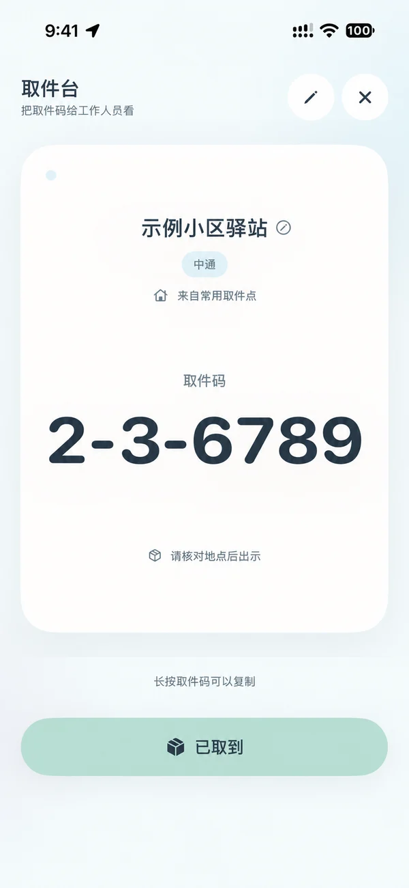
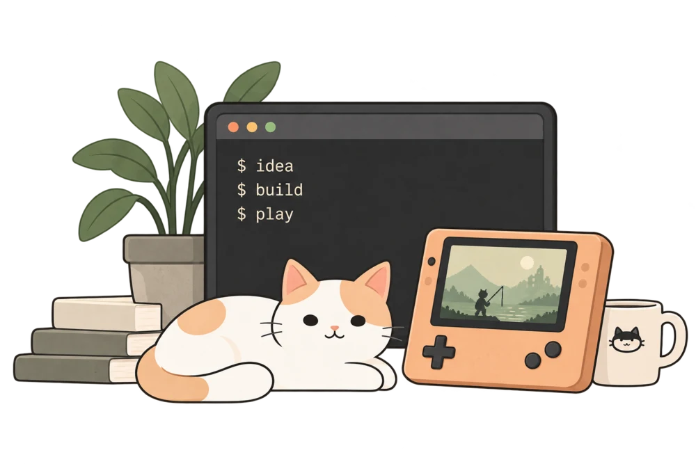
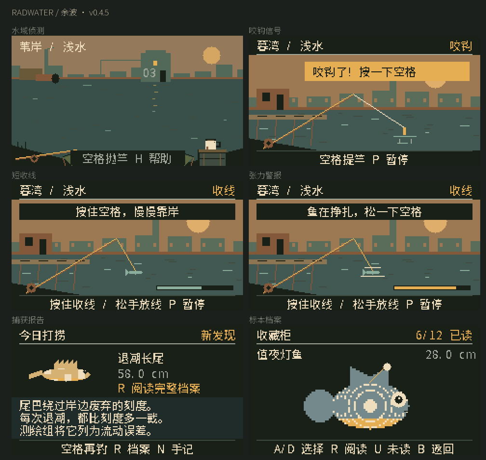

做过的一些东西

ClaraCore Desktop
在本地管理 Agent 的记忆、任务续接与运行状态。
GitHubCora
把应用错误日志整理成可复核的问题，交给人和 Agent 处理。
GitHubcroc for macOS
给 croc 文件传输工具做一个独立的原生 macOS 界面。
GitHub关于我
我是 Zhou Wei。喜欢从自己遇到的小麻烦出发，把想法做成能用的东西。
有时是一个日常小工具，有时是一次关于 AI 的实验，也可能是一款掌心里的游戏。
在 GitHub 找到我